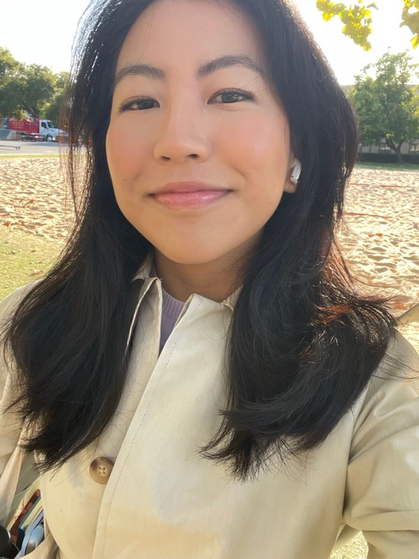

About

My name is Mandarava, but you can call me Man, rhymes with fun. I am a senior from Sacramento (although I’ve lived in many places as a military child), studying Political Science and English. I love to read political theory and philosophy, as well as write fiction. This year, I serve as Co-President of the senior class, President of the Stanford Political Union, RA at the public service dorm (Otero!!), and a board member on the Democracy Day team. Feel free to reach out to me if our interests are aligned <3
Project interests
I am interested in working on a project that explores the social effects of AI-generated media on social media users, especially teens and young adults. I would also be interested in looking into how AI affects decision-making in the military, and which places are targeted by autonomous weapons.